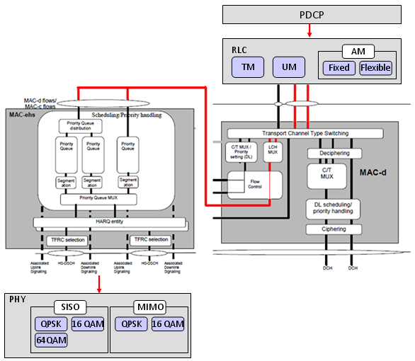

| Radio Bearer - Release 7 |
|
Overall structure of Release 7 Radio Bearer is as follows.
DL-DCCH-Message ::= SEQUENCE [0] +-message ::= CHOICE [radioBearerSetup] +-radioBearerSetup ::= CHOICE [later-than-r3] +-later-than-r3 ::= SEQUENCE +-rrc-TransactionIdentifier ::= INTEGER (0..3) [0] +-criticalExtensions ::= CHOICE [criticalExtensions] +-criticalExtensions ::= CHOICE [criticalExtensions] +-criticalExtensions ::= CHOICE [criticalExtensions] +-criticalExtensions ::= CHOICE [r7] +-r7 ::= SEQUENCE [00] +-radioBearerSetup-r7 ::= SEQUENCE [00100011010000000000111110] | +-integrityProtectionModeInfo ::= SEQUENCE OPTIONAL:Omit | +-cipheringModeInfo ::= SEQUENCE OPTIONAL:Omit | +-activationTime ::= INTEGER (0..255) [0] OPTIONAL:Exist | +-new-U-RNTI ::= SEQUENCE OPTIONAL:Omit | +-new-C-RNTI ::= BIT STRING OPTIONAL:Omit | +-new-DSCH-RNTI ::= BIT STRING OPTIONAL:Omit | +-new-H-RNTI ::= BIT STRING SIZE(16) [0001001000110100] OPTIONAL:Exist | +-newPrimary-E-RNTI ::= BIT STRING SIZE(16) [0001001000110100] OPTIONAL:Exist | +-newSecondary-E-RNTI ::= BIT STRING OPTIONAL:Omit | +-rrc-StateIndicator ::= ENUMERATED [cell-DCH] | +-utran-DRX-CycleLengthCoeff ::= SEQUENCE [00] OPTIONAL:Exist | +-ura-Identity ::= BIT STRING OPTIONAL:Omit | +-supportForChangeOfUE-Capability ::= BOOLEAN OPTIONAL:Omit | +-cn-InformationInfo ::= SEQUENCE OPTIONAL:Omit | +-specificationMode ::= CHOICE [complete] | | +-complete ::= SEQUENCE [0101000111101] | | +-srb-InformationSetupList ::= SEQUENCE OF OPTIONAL:Omit | | +-rab-InformationSetupList ::= SEQUENCE OF SIZE(1..maxRABsetup[16]) [1] OPTIONAL:Exist | | +-rab-InformationReconfigList ::= SEQUENCE OF OPTIONAL:Omit | | +-rb-InformationReconfigList ::= SEQUENCE OF SIZE(1..maxRB[32]) [4] OPTIONAL:Exist | | +-rb-InformationAffectedList ::= SEQUENCE OF OPTIONAL:Omit | | +-dl-CounterSynchronisationInfo ::= SEQUENCE OPTIONAL:Omit | | +-pdcp-ROHC-TargetMode ::= ENUMERATED OPTIONAL:Omit | | +-ul-CommonTransChInfo ::= SEQUENCE [0010] OPTIONAL:Exist | | +-ul-deletedTransChInfoList ::= SEQUENCE OF SIZE(1..maxTrCH[32]) [1] OPTIONAL:Exist | | +-ul-AddReconfTransChInfoList ::= SEQUENCE OF SIZE(1..maxTrCH[32]) [1] OPTIONAL:Exist | | +-dl-CommonTransChInfo ::= SEQUENCE [01] OPTIONAL:Exist | | +-dl-DeletedTransChInfoList ::= SEQUENCE OF OPTIONAL:Omit | | +-dl-AddReconfTransChInfoList ::= SEQUENCE OF SIZE(1..maxTrCHpreconf[32]) [2] | +-frequencyInfo ::= SEQUENCE OPTIONAL:Omit | +-multi-frequencyInfo ::= SEQUENCE OPTIONAL:Omit | +-dtx-drx-TimingInfo ::= SEQUENCE OPTIONAL:Omit | +-dtx-drx-Info ::= SEQUENCE OPTIONAL:Omit | +-hs-scch-LessInfo ::= SEQUENCE OPTIONAL:Omit | +-mimoParameters ::= SEQUENCE OPTIONAL:Omit | +-maxAllowedUL-TX-Power ::= INTEGER OPTIONAL:Omit | +-ul-DPCH-Info ::= SEQUENCE [1] OPTIONAL:Exist | +-ul-EDCH-Information ::= SEQUENCE [1] OPTIONAL:Exist | +-dl-HSPDSCH-Information ::= SEQUENCE [11] OPTIONAL:Exist | +-dl-CommonInformation ::= SEQUENCE [110] OPTIONAL:Exist | +-dl-InformationPerRL-List ::= SEQUENCE OF SIZE(1..maxRL[8]) [1] OPTIONAL:Exist | +-mbms-PL-ServiceRestrictInfo ::= ENUMERATED OPTIONAL:Omit +-radioBearerSetup-r7-add-ext ::= BIT STRING OPTIONAL:Omit +-v780NonCriticalExtensions ::= SEQUENCE OPTIONAL:Omit
Overall data/signal follow through Release 7 architecture can be illustrated as follows. Basically Radio Bearer Setup is used to configure all the components of the following illustration.

We can think of many different combinations of channel mappings in HSDPA/HSUPA and depending on what kind of channel mappings you are implementing the detailed contents of Radio Bearer Setup message would vary. Here goes just a couple of sample mappings that I can think of.
First mapping is as follows. In this, you see user data (DTCH) goes through MAC-ehs and mapped to HSDSH transport channel and all the other control data(DCCH) goes through MAC-d only and mapped onto DCH. Since HSDSH does not have any power control (TPC) component, the power control should also be done by DCH-DPDCH/DPCCH.
Second case is as follows. In this case, both User data (DTCH) and Control Data(DCCH) goes through MAC-ehs and mapped to HSDSCH, but we still using full DPCCH just to send power control (TPC) command. But in this case, you don't need any higher layer configuration since TPC is implemented only at physical layer.
The third case case is as follows. In this case, both User data (DTCH) and Control Data(DCCH) goes through MAC-ehs and mapped to HSDSCH, but we still using full DPCCH just to send power control (TPC) command. But in this case, you don't need any higher layer configuration since TPC is implemented only at physical layer. You may think this is almost the same as in the second case. It is true but there is only important difference. In this example, F-DPCH is used in stead of normal DPCH.
In this sample Radio Bearer message, we have only one element in rb-InformationSetupList because we have only one user plane logical channel. (Actually we have another four control channel which should be defined as well, but we don't do it at this step because they are already defined in RRC Connection Setup step). rab-InformationSetupList is the part in which we define a channel mapping which we created a new at this step. If you want to change the channel mapping which has already defined in previous step (e.g, RRC Connection Setup), you have to modify those in rb-InformationReconfigList.
| | +-rab-InformationSetupList ::= SEQUENCE OF SIZE(1..maxRABsetup[16]) [1] OPTIONAL:Exist | | | +-RAB-InformationSetup-r7 ::= SEQUENCE | | | +-rab-Info ::= SEQUENCE [000] | | | | +-rab-Identity ::= CHOICE [gsm-MAP-RAB-Identity] | | | | | +-gsm-MAP-RAB-Identity ::= BIT STRING SIZE(8) [00000000] | | | | +-mbms-SessionIdentity ::= OCTET STRING OPTIONAL:Omit | | | | +-mbms-ServiceIdentity ::= OCTET STRING OPTIONAL:Omit | | | | +-cn-DomainIdentity ::= ENUMERATED [ps-domain] | | | | +-nas-Synchronisation-Indicator ::= BIT STRING OPTIONAL:Omit | | | | +-re-EstablishmentTimer ::= ENUMERATED [useT315] | | | +-rb-InformationSetupList ::= SEQUENCE OF SIZE(1..maxRBperRAB[8]) [1] | | | +-RB-InformationSetup-r7 ::= SEQUENCE [0] | | | +-rb-Identity ::= INTEGER (1..32) [8] | | | +-pdcp-Info ::= SEQUENCE OPTIONAL:Omit | | | +-rlc-InfoChoice ::= CHOICE [rlc-Info] | | | | +-rlc-Info ::= SEQUENCE [1101] | | | | +-ul-RLC-Mode ::= CHOICE [ul-AM-RLC-Mode] OPTIONAL:Exist | | | | +-dl-RLC-Mode ::= CHOICE [dl-AM-RLC-Mode] OPTIONAL:Exist | | | | +-rlc-OneSidedReEst ::= BOOLEAN [FALSE] | | | | +-altE-bitInterpretation ::= ENUMERATED OPTIONAL:Omit | | | | +-useSpecialValueOfHEField ::= ENUMERATED [true] OPTIONAL:Exist | | | +-rb-MappingInfo ::= SEQUENCE OF SIZE(1..maxRBMuxOptions[8]) [1] | | | +-RB-MappingOption-r7 ::= SEQUENCE [11] | | | +-ul-LogicalChannelMappings ::= CHOICE [oneLogicalChannel] OPTIONAL:Exist | | | +-dl-LogicalChannelMappingList ::= SEQUENCE OF SIZE(1..maxLoCHperRLC[2]) [1] OPTIONAL:Exist
Uplink side RLC configuration is similar to normal HSUPA ulplink configuration as follows.
| | | | +-ul-RLC-Mode ::= CHOICE [ul-AM-RLC-Mode] OPTIONAL:Exist | | | | | +-ul-AM-RLC-Mode ::= SEQUENCE [1] | | | | | +-transmissionRLC-Discard ::= CHOICE [noDiscard] | | | | | | +-noDiscard ::= ENUMERATED [dat10] | | | | | +-transmissionWindowSize ::= ENUMERATED [tw2047] | | | | | +-timerRST ::= ENUMERATED [tr1000] | | | | | +-max-RST ::= ENUMERATED [rst12] | | | | | +-pollingInfo ::= SEQUENCE [000100] OPTIONAL:Exist | | | | | +-timerPollProhibit ::= ENUMERATED OPTIONAL:Omit | | | | | +-timerPoll ::= ENUMERATED OPTIONAL:Omit | | | | | +-poll-PDU ::= ENUMERATED OPTIONAL:Omit | | | | | +-poll-SDU ::= ENUMERATED [sdu1] OPTIONAL:Exist | | | | | +-lastTransmissionPDU-Poll ::= BOOLEAN [TRUE] | | | | | +-lastRetransmissionPDU-Poll ::= BOOLEAN [TRUE] | | | | | +-pollWindow ::= ENUMERATED OPTIONAL:Omit | | | | | +-timerPollPeriodic ::= ENUMERATED OPTIONAL:Omit
In downlink case, most of parameter has the same function as in other conventional downlink (R99, R5, R6) but there is one important difference as you see below. It has aa special option in RLC-PDU Size items. In this case, the option is set to be 'fixedSize' but you can configure this to be 'flexible' size as well.
| | | | +-dl-RLC-Mode ::= CHOICE [dl-AM-RLC-Mode] OPTIONAL:Exist | | | | | +-dl-AM-RLC-Mode ::= SEQUENCE | | | | | +-dl-RLC-PDU-size ::= CHOICE [fixedSize] | | | | | | +-fixedSize ::= CHOICE [sizeType2] | | | | | | +-sizeType2 ::= SEQUENCE [0] | | | | | | +-part1 ::= INTEGER (0..23) [2] | | | | | | +-part2 ::= INTEGER OPTIONAL:Omit | | | | | +-inSequenceDelivery ::= BOOLEAN [TRUE] | | | | | +-receivingWindowSize ::= ENUMERATED [rw2047] | | | | | +-dl-RLC-StatusInfo ::= SEQUENCE [100] | | | | | +-timerStatusProhibit ::= ENUMERATED [tsp200] OPTIONAL:Exist | | | | | +-dummy ::= ENUMERATED OPTIONAL:Omit | | | | | +-missingPDU-Indicator ::= BOOLEAN [TRUE] | | | | | +-timerStatusPeriodic ::= ENUMERATED OPTIONAL:Omit | | | | +-rlc-OneSidedReEst ::= BOOLEAN [FALSE] | | | | +-altE-bitInterpretation ::= ENUMERATED OPTIONAL:Omit | | | | +-useSpecialValueOfHEField ::= ENUMERATED [true] OPTIONAL:Exist
Following is rb-MappingInfo which defines the transport channel and mapping between logical channel and the tranport channel.
| | | +-rb-MappingInfo ::= SEQUENCE OF SIZE(1..maxRBMuxOptions[8]) [1] | | | +-RB-MappingOption-r7 ::= SEQUENCE [11] | | | +-ul-LogicalChannelMappings ::= CHOICE [oneLogicalChannel] OPTIONAL:Exist | | | | +-oneLogicalChannel ::= SEQUENCE | | | | +-ul-TrCH-Type ::= CHOICE [e-dch] | | | | | +-e-dch ::= SEQUENCE | | | | | +-logicalChannelIdentity ::= INTEGER (1..15) [4] | | | | | +-e-DCH-MAC-d-FlowIdentity ::= INTEGER (0..maxE-DCHMACdFlow-1[7]) [0] | | | | | +-ddi ::= INTEGER (0..62) [5] | | | | | +-rlc-PDU-SizeList ::= SEQUENCE OF SIZE(1..maxRLCPDUsizePerLogChan[32]) [1] | | | | | | +-RLC-PDU-Size ::= CHOICE [sizeType2] | | | | | | +-sizeType2 ::= SEQUENCE [0] | | | | | | +-part1 ::= INTEGER (0..23) [2] | | | | | | +-part2 ::= INTEGER OPTIONAL:Omit | | | | | +-includeInSchedulingInfo ::= BOOLEAN [TRUE] | | | | +-mac-LogicalChannelPriority ::= INTEGER (1..8) [8] | | | +-dl-LogicalChannelMappingList ::= SEQUENCE OF SIZE(1..maxLoCHperRLC[2]) [1] OPTIONAL:Exist | | | +-DL-LogicalChannelMapping-r7 ::= SEQUENCE [1] | | | +-dl-TransportChannelType ::= CHOICE [hsdsch] | | | | +-hsdsch ::= CHOICE [mac-ehs] | | | | +-mac-ehs ::= INTEGER (0..7) [1] | | | +-logicalChannelIdentity ::= INTEGER (1..15) [15] OPTIONAL:Exist
| | +-rb-InformationReconfigList ::= SEQUENCE OF SIZE(1..maxRB[32]) [4] OPTIONAL:Exist | | | +-RB-InformationReconfig-r7 ::= SEQUENCE [00010] <= This is for UL e-DCH for DCCH 0 /DL DCH for All DCCH | | | +-RB-InformationReconfig-r7 ::= SEQUENCE [00010] <= This is for UL e-DCH for DCCH 1 /DL DCH for All DCCH | | | +-RB-InformationReconfig-r7 ::= SEQUENCE [00010] <= This is for UL e-DCH for DCCH 2 /DL DCH for All DCCH | | | +-RB-InformationReconfig-r7 ::= SEQUENCE [00010] <= This is for UL e-DCH for DCCH 3 /DL DCH for All DCCH
| | | +-RB-InformationReconfig-r7 ::= SEQUENCE [00010] | | | | +-rb-Identity ::= INTEGER (1..32) [1] | | | | +-pdcp-Info ::= SEQUENCE OPTIONAL:Omit | | | | +-pdcp-SN-Info ::= INTEGER OPTIONAL:Omit | | | | +-rlc-Info ::= SEQUENCE OPTIONAL:Omit | | | | +-rb-MappingInfo ::= SEQUENCE OF SIZE(1..maxRBMuxOptions[8]) [1] OPTIONAL:Exist | | | | | +-RB-MappingOption-r7 ::= SEQUENCE [11] | | | | | +-ul-LogicalChannelMappings ::= CHOICE [oneLogicalChannel] OPTIONAL:Exist | | | | | | +-oneLogicalChannel ::= SEQUENCE | | | | | | +-ul-TrCH-Type ::= CHOICE [e-dch] | | | | | | | +-e-dch ::= SEQUENCE | | | | | | | +-logicalChannelIdentity ::= INTEGER (1..15) [1] | | | | | | | +-e-DCH-MAC-d-FlowIdentity ::= INTEGER (0..maxE-DCHMACdFlow-1[7]) [1] | | | | | | | +-ddi ::= INTEGER (0..62) [1] | | | | | | | +-rlc-PDU-SizeList ::= SEQUENCE OF SIZE(1..maxRLCPDUsizePerLogChan[32]) [1] | | | | | | | | +-RLC-PDU-Size ::= CHOICE [sizeType1] | | | | | | | | +-sizeType1 ::= INTEGER (0..31) [16] | | | | | | | +-includeInSchedulingInfo ::= BOOLEAN [TRUE] | | | | | | +-mac-LogicalChannelPriority ::= INTEGER (1..8) [1] | | | | | +-dl-LogicalChannelMappingList ::= SEQUENCE OF SIZE(1..maxLoCHperRLC[2]) [1] OPTIONAL:Exist | | | | | +-DL-LogicalChannelMapping-r7 ::= SEQUENCE [1] | | | | | +-dl-TransportChannelType ::= CHOICE [dch] | | | | | | +-dch ::= INTEGER (1..32) [31] | | | | | +-logicalChannelIdentity ::= INTEGER (1..15) [1] OPTIONAL:Exist | | | | +-rb-StopContinue ::= ENUMERATED OPTIONAL:Omit
| | +-ul-CommonTransChInfo ::= SEQUENCE [0010] OPTIONAL:Exist | | | +-tfc-Subset ::= CHOICE OPTIONAL:Omit | | | +-prach-TFCS ::= CHOICE OPTIONAL:Omit | | | +-modeSpecificInfo ::= CHOICE [fdd] OPTIONAL:Exist | | | | +-fdd ::= SEQUENCE | | | | +-ul-TFCS ::= CHOICE [normalTFCI-Signalling] | | | | +-normalTFCI-Signalling ::= CHOICE [complete] | | | | +-complete ::= SEQUENCE | | | | +-ctfcSize ::= CHOICE [ctfc2Bit] | | | | +-ctfc2Bit ::= SEQUENCE OF SIZE(1..maxTFC[1024]) [2] | | | | +- ::= SEQUENCE [1] | | | | | +-ctfc2 ::= INTEGER (0..3) [0] | | | | | +-powerOffsetInformation ::= SEQUENCE [0] OPTIONAL:Exist | | | | | +-gainFactorInformation ::= CHOICE [computedGainFactors] | | | | | | +-computedGainFactors ::= INTEGER (0..3) [0] | | | | | +-powerOffsetPp-m ::= INTEGER OPTIONAL:Omit | | | | +- ::= SEQUENCE [1] | | | | +-ctfc2 ::= INTEGER (0..3) [1] | | | | +-powerOffsetInformation ::= SEQUENCE [0] OPTIONAL:Exist | | | | +-gainFactorInformation ::= CHOICE [signalledGainFactors] | | | | | +-signalledGainFactors ::= SEQUENCE [1] | | | | | +-modeSpecificInfo ::= CHOICE [fdd] | | | | | | +-fdd ::= SEQUENCE | | | | | | +-gainFactorBetaC ::= INTEGER (0..15) [8] | | | | | +-gainFactorBetaD ::= INTEGER (0..15) [15] | | | | | +-referenceTFC-ID ::= INTEGER (0..3) [0] OPTIONAL:Exist | | | | +-powerOffsetPp-m ::= INTEGER OPTIONAL:Omit | | | +-tfc-SubsetList ::= SEQUENCE OF OPTIONAL:Omit
| | +-ul-deletedTransChInfoList ::= SEQUENCE OF SIZE(1..maxTrCH[32]) [1] OPTIONAL:Exist | | | +-UL-TransportChannelIdentity-r6 ::= CHOICE [dch-usch] | | | +-dch-usch ::= SEQUENCE | | | +-ul-TransportChannelType ::= ENUMERATED [dch] | | | +-ul-TransportChannelIdentity ::= INTEGER (1..32) [31]
| | +-ul-AddReconfTransChInfoList ::= SEQUENCE OF SIZE(1..maxTrCH[32]) [1] OPTIONAL:Exist | | | +-UL-AddReconfTransChInformation-r7 ::= CHOICE [e-dch] | | | +-e-dch ::= SEQUENCE [1] | | | +-modeSpecific ::= CHOICE [fdd] | | | | +-fdd ::= SEQUENCE | | | | +-tti ::= ENUMERATED [tti10] | | | +-harq-Info ::= ENUMERATED [rvtable] | | | +-addReconf-MAC-d-FlowList ::= SEQUENCE OF SIZE(1..maxE-DCHMACdFlow[8]) [5] OPTIONAL:Exist | | | +-E-DCH-AddReconf-MAC-d-Flow-r7 ::= SEQUENCE [11001] <= This is for UL DTCH 0 | | | +-E-DCH-AddReconf-MAC-d-Flow-r7 ::= SEQUENCE [11001] <= This is for UL DCCH 0 | | | +-E-DCH-AddReconf-MAC-d-Flow-r7 ::= SEQUENCE [11001] <= This is for UL DCCH 1 | | | +-E-DCH-AddReconf-MAC-d-Flow-r7 ::= SEQUENCE [11001] <= This is for UL DCCH 2 | | | +-E-DCH-AddReconf-MAC-d-Flow-r7 ::= SEQUENCE [11001] <= This is for UL DCCH 3
| | | +-E-DCH-AddReconf-MAC-d-Flow-r7 ::= SEQUENCE [11001] | | | | +-mac-d-FlowIdentity ::= INTEGER (0..maxE-DCHMACdFlow-1[7]) [0] | | | | +-mac-d-FlowPowerOffset ::= INTEGER (0..6) [0] OPTIONAL:Exist | | | | +-mac-d-FlowMaxRetrans ::= INTEGER (0..15) [7] OPTIONAL:Exist | | | | +-mac-d-FlowRetransTimer ::= ENUMERATED OPTIONAL:Omit | | | | +-mac-d-FlowMultiplexingList ::= BIT STRING OPTIONAL:Omit | | | | +-transmissionGrantType ::= CHOICE [scheduledTransmissionGrantInfo] OPTIONAL:Exist | | | | +-scheduledTransmissionGrantInfo ::= NULL
| | +-dl-CommonTransChInfo ::= SEQUENCE [01] OPTIONAL:Exist | | | +-sccpch-TFCS ::= CHOICE OPTIONAL:Omit | | | +-modeSpecificInfo ::= CHOICE [fdd] OPTIONAL:Exist | | | +-fdd ::= SEQUENCE [1] | | | +-dl-Parameters ::= CHOICE [dl-DCH-TFCS] OPTIONAL:Exist | | | +-dl-DCH-TFCS ::= SEQUENCE [1] | | | +-tfcs ::= CHOICE [normalTFCI-Signalling] OPTIONAL:Exist | | | +-normalTFCI-Signalling ::= CHOICE [complete] | | | +-complete ::= SEQUENCE | | | +-ctfcSize ::= CHOICE [ctfc2Bit] | | | +-ctfc2Bit ::= SEQUENCE OF SIZE(1..maxTFC[1024]) [2] | | | +- ::= SEQUENCE [0] | | | | +-ctfc2 ::= INTEGER (0..3) [0] | | | | +-powerOffsetInformation ::= SEQUENCE OPTIONAL:Omit | | | +- ::= SEQUENCE [0] | | | +-ctfc2 ::= INTEGER (0..3) [1] | | | +-powerOffsetInformation ::= SEQUENCE OPTIONAL:Omit
dl-AddReconfTransChInfoList in this sample RAB represents mapping between the two layers in the following diagram. This is the case where DTCH is mapped to MAC-ehs/HSDSCH and all DCCH are mapped to MAC-d/DCH.
The simplified the structure of this IE is as follos.
| | +-dl-AddReconfTransChInfoList ::= SEQUENCE OF SIZE(1..maxTrCHpreconf[32]) [2] OPTIONAL:Exist | | +-DL-AddReconfTransChInformation-r7 ::= SEQUENCE [0] <== This is for DTCH mapped to MACehs/HSDSCH | | | +-dl-TransportChannelType ::= CHOICE [hsdsch] | | | | +-hsdsch ::= NULL | | | +-tfs-SignallingMode ::= CHOICE [hsdsch] | | | | +-hsdsch ::= SEQUENCE [11] | | | | +-dl-MAC-HeaderType ::= CHOICE [mac-ehs] OPTIONAL:Exist | | | | +-mac-ehs ::= SEQUENCE [10] | | | +-dch-QualityTarget ::= SEQUENCE OPTIONAL:Omit | | +-DL-AddReconfTransChInformation-r7 ::= SEQUENCE [1] <== This is for DCCH mapped to MAC-d/DCH | | +-dl-TransportChannelType ::= CHOICE [dch] | | | +-dch ::= INTEGER (1..32) [31] | | +-dch-QualityTarget ::= SEQUENCE OPTIONAL:Exist
Full details of this IE is as follows.
| | +-dl-AddReconfTransChInfoList ::= SEQUENCE OF SIZE(1..maxTrCHpreconf[32]) [2] OPTIONAL:Exist | | +-DL-AddReconfTransChInformation-r7 ::= SEQUENCE [0] | | | +-dl-TransportChannelType ::= CHOICE [hsdsch] | | | | +-hsdsch ::= NULL | | | +-tfs-SignallingMode ::= CHOICE [hsdsch] | | | | +-hsdsch ::= SEQUENCE [11] | | | | +-harqInfo ::= SEQUENCE OPTIONAL:Exist | | | | | +-numberOfProcesses ::= ENUMERATED [n6] | | | | | +-memoryPartitioning ::= CHOICE [implicit] | | | | | +-implicit ::= NULL | | | | +-dl-MAC-HeaderType ::= CHOICE [mac-ehs] OPTIONAL:Exist | | | | +-mac-ehs ::= SEQUENCE [10] | | | | +-mac-ehs-AddReconfQueue-List ::= SEQUENCE OF SIZE(1..maxQueueIDs[8]) [1] OPTIONAL:Exist | | | | | +-MAC-ehs-AddReconfReordQ ::= SEQUENCE [0] | | | | | +-mac-ehs-QueueId ::= INTEGER (0..7) [1] | | | | | +-reorderingReleaseTimer ::= ENUMERATED [rt50] | | | | | +-reorderingResetTimer ::= ENUMERATED OPTIONAL:Omit | | | | | +-mac-ehsWindowSize ::= ENUMERATED [mws16] | | | | +-dummy ::= SEQUENCE OF OPTIONAL:Omit | | | +-dch-QualityTarget ::= SEQUENCE OPTIONAL:Omit | | +-DL-AddReconfTransChInformation-r7 ::= SEQUENCE [1] | | +-dl-TransportChannelType ::= CHOICE [dch] | | | +-dch ::= INTEGER (1..32) [31] | | +-tfs-SignallingMode ::= CHOICE [explicit-config] | | | +-explicit-config ::= CHOICE [dedicatedTransChTFS] | | | +-dedicatedTransChTFS ::= SEQUENCE | | | +-tti ::= CHOICE [tti40] | | | | +-tti40 ::= SEQUENCE OF SIZE(1..maxTF[32]) [1] | | | | +-DedicatedDynamicTF-Info ::= SEQUENCE | | | | +-rlc-Size ::= CHOICE [octetModeType1] | | | | | +-octetModeType1 ::= CHOICE [sizeType1] | | | | | +-sizeType1 ::= INTEGER (0..31) [16] | | | | +-numberOfTbSizeList ::= SEQUENCE OF SIZE(1..maxTF[32]) [2] | | | | | +-NumberOfTransportBlocks ::= CHOICE [zero] | | | | | | +-zero ::= NULL | | | | | +-NumberOfTransportBlocks ::= CHOICE [one] | | | | | +-one ::= NULL | | | | +-logicalChannelList ::= CHOICE [allSizes] | | | | +-allSizes ::= NULL | | | +-semistaticTF-Information ::= SEQUENCE | | | +-channelCodingType ::= CHOICE [convolutional] | | | | +-convolutional ::= ENUMERATED [third] | | | +-rateMatchingAttribute ::= INTEGER (1..hiRM[256]) [160] | | | +-crc-Size ::= ENUMERATED [crc16] | | +-dch-QualityTarget ::= SEQUENCE OPTIONAL:Exist | | +-bler-QualityValue ::= INTEGER (-63..0) [-20]
| +-ul-DPCH-Info ::= SEQUENCE [1] OPTIONAL:Exist | | +-ul-DPCH-PowerControlInfo ::= CHOICE [fdd] OPTIONAL:Exist | | | +-fdd ::= SEQUENCE [111] | | | +-dpcch-PowerOffset ::= INTEGER (-82..-3) [-30] | | | +-pc-Preamble ::= INTEGER (0..7) [0] | | | +-sRB-delay ::= INTEGER (0..7) [7] | | | +-powerControlAlgorithm ::= CHOICE [algorithm1] | | | | +-algorithm1 ::= INTEGER (0..1) [0] | | | +-deltaACK ::= INTEGER (0..8) [3] OPTIONAL:Exist | | | +-deltaNACK ::= INTEGER (0..8) [3] OPTIONAL:Exist | | | +-ack-NACK-repetition-factor ::= INTEGER (1..4) [1] OPTIONAL:Exist | | | +-harq-Preamble-Mode ::= INTEGER (0..1) [0] | | +-modeSpecificInfo ::= CHOICE [fdd] | | +-fdd ::= SEQUENCE | | +-scramblingCodeType ::= ENUMERATED [longSC] | | +-scramblingCode ::= INTEGER (0..16777215) [0] | | +-dpdchPresence ::= CHOICE [notPresent] | | +-notPresent ::= SEQUENCE [00] | | +-tfci-Existence ::= BOOLEAN [TRUE] | | +-numberOfFBI-Bits ::= INTEGER OPTIONAL:Omit | | +-numberOfTPC-Bits ::= ENUMERATED OPTIONAL:Omit
| +-ul-EDCH-Information ::= SEQUENCE [1] OPTIONAL:Exist | | +-mac-es-e-resetIndicator ::= ENUMERATED [true] OPTIONAL:Exist | | +-modeSpecificInfo ::= CHOICE [fdd] | | +-fdd ::= SEQUENCE [1110] | | +-e-DPCCH-Info ::= SEQUENCE [00] OPTIONAL:Exist | | | +-e-DPCCH-DPCCH-PowerOffset ::= INTEGER (0..8) [0] | | | +-happyBit-DelayCondition ::= ENUMERATED [ms100] | | | +-e-TFC-Boost-Info ::= SEQUENCE OPTIONAL:Omit | | | +-e-DPDCH-PowerInterpolation ::= BOOLEAN OPTIONAL:Omit | | +-e-DPDCH-Info ::= SEQUENCE [000] OPTIONAL:Exist | | | +-e-TFCI-TableIndex ::= INTEGER (0..1) [0] | | | +-e-DCH-MinimumSet-E-TFCI ::= INTEGER OPTIONAL:Omit | | | +-reference-E-TFCIs ::= SEQUENCE OF SIZE(1..8) [1] | | | | +-E-DPDCH-Reference-E-TFCI-r7 ::= SEQUENCE | | | | +-reference-E-TFCI ::= INTEGER (0..127) [119] | | | | +-reference-E-TFCI-PO-r7 ::= INTEGER (0..31) [5] | | | +-maxChannelisationCodes ::= ENUMERATED [sf4x2] | | | +-pl-NonMax ::= INTEGER (11..25) [21] | | | +-schedulingInfoConfiguration ::= SEQUENCE [00] | | | | +-periodicityOfSchedInfo-NoGrant ::= ENUMERATED OPTIONAL:Omit | | | | +-periodicityOfSchedInfo-Grant ::= ENUMERATED OPTIONAL:Omit | | | | +-powerOffsetForSchedInfo ::= INTEGER (0..6) [0] | | | +-threeIndexStepThreshold ::= INTEGER OPTIONAL:Omit | | | +-twoIndexStepThreshold ::= INTEGER OPTIONAL:Omit | | +-schedulingTransmConfiguration ::= SEQUENCE [00] OPTIONAL:Exist | | | +-ms2-SchedTransmGrantHARQAlloc ::= BIT STRING OPTIONAL:Omit | | | +-servingGrant ::= SEQUENCE OPTIONAL:Omit | | +-ul-16QAM-Settings ::= SEQUENCE OPTIONAL:Omit
| +-dl-HSPDSCH-Information ::= SEQUENCE [11] OPTIONAL:Exist | | +-hs-scch-Info ::= SEQUENCE OPTIONAL:Exist | | | +-modeSpecificInfo ::= CHOICE [fdd] | | | +-fdd ::= SEQUENCE [0] | | | +-hS-SCCHChannelisationCodeInfo ::= SEQUENCE OF SIZE(1..maxHSSCCHs[4]) [1] | | | | +-HS-SCCH-Codes ::= INTEGER (0..127) [7] | | | +-dl-ScramblingCode ::= INTEGER OPTIONAL:Omit | | +-measurement-feedback-Info ::= SEQUENCE OPTIONAL:Exist | | | +-modeSpecificInfo ::= CHOICE [fdd] | | | +-fdd ::= SEQUENCE | | | +-measurementPowerOffset ::= INTEGER (-12..26) [26] | | | +-feedback-cycle ::= ENUMERATED [fc4] | | | +-cqi-RepetitionFactor ::= INTEGER (1..4) [1] | | | +-deltaCQI ::= INTEGER (0..8) [5] | | +-modeSpecificInfo ::= CHOICE [fdd] | | +-fdd ::= SEQUENCE [0] | | +-dl-64QAM-Configured ::= ENUMERATED OPTIONAL:Omit
| +-dl-CommonInformation ::= SEQUENCE [110] OPTIONAL:Exist | | +-dl-dpchInfoCommon ::= CHOICE [dl-DPCH-InfoCommon] OPTIONAL:Exist | | | +-dl-DPCH-InfoCommon ::= SEQUENCE [0] | | | +-cfnHandling ::= CHOICE [maintain] | | | | +-maintain ::= SEQUENCE [0] | | | | +-timingmaintainedsynchind ::= ENUMERATED OPTIONAL:Omit | | | +-modeSpecificInfo ::= CHOICE [fdd] | | | | +-fdd ::= SEQUENCE [10] | | | | +-dl-DPCH-PowerControlInfo ::= SEQUENCE OPTIONAL:Exist | | | | | +-modeSpecificInfo ::= CHOICE [fdd] | | | | | +-fdd ::= SEQUENCE | | | | | +-dpc-Mode ::= ENUMERATED [singleTPC] | | | | +-powerOffsetPilot-pdpdch ::= INTEGER (0..24) [0] | | | | +-dl-rate-matching-restriction ::= SEQUENCE OPTIONAL:Omit | | | | +-spreadingFactorAndPilot ::= CHOICE [sfd256] | | | | | +-sfd256 ::= ENUMERATED [pb4] | | | | +-positionFixedOrFlexible ::= ENUMERATED [fixed] | | | | +-tfci-Existence ::= BOOLEAN [FALSE] | | | +-mac-d-HFN-initial-value ::= BIT STRING OPTIONAL:Omit | | +-modeSpecificInfo ::= CHOICE [fdd] | | | +-fdd ::= SEQUENCE [001] | | | +-defaultDPCH-OffsetValue ::= INTEGER OPTIONAL:Omit | | | +-dpch-CompressedModeInfo ::= SEQUENCE OPTIONAL:Omit | | | +-tx-DiversityMode ::= ENUMERATED [noDiversity] OPTIONAL:Exist | | +-mac-hsResetIndicator ::= ENUMERATED [true] OPTIONAL:Exist | | +-postVerificationPeriod ::= ENUMERATED OPTIONAL:Omit
| +-dl-InformationPerRL-List ::= SEQUENCE OF SIZE(1..maxRL[8]) [1] OPTIONAL:Exist | | +-DL-InformationPerRL-r7 ::= SEQUENCE [110] | | +-modeSpecificInfo ::= CHOICE [fdd] | | | +-fdd ::= SEQUENCE | | | +-primaryCPICH-Info ::= SEQUENCE | | | | +-primaryScramblingCode ::= INTEGER (0..511) [9] | | | +-servingHSDSCH-RL-indicator ::= BOOLEAN [TRUE] | | | +-servingEDCH-RL-indicator ::= BOOLEAN [TRUE] | | +-dl-dpchInfo ::= CHOICE [dl-DPCH-InfoPerRL] OPTIONAL:Exist | | | +-dl-DPCH-InfoPerRL ::= CHOICE [fdd] | | | +-fdd ::= SEQUENCE [000] | | | +-pCPICH-UsageForChannelEst ::= ENUMERATED [mayBeUsed] | | | +-dpch-FrameOffset ::= INTEGER (0..149) [0] | | | +-secondaryCPICH-Info ::= SEQUENCE OPTIONAL:Omit | | | +-dl-ChannelisationCodeList ::= SEQUENCE OF SIZE(1..maxDPCH-DLchan[8]) [1] | | | | +-DL-ChannelisationCode ::= SEQUENCE [01] | | | | +-secondaryScramblingCode ::= INTEGER OPTIONAL:Omit | | | | +-sf-AndCodeNumber ::= CHOICE [sf256] | | | | | +-sf256 ::= INTEGER (0..255) [10] | | | | +-scramblingCodeChange ::= ENUMERATED [noCodeChange] OPTIONAL:Exist | | | +-tpc-CombinationIndex ::= INTEGER (0..5) [0] | | | +-powerOffsetTPC-pdpdch ::= INTEGER OPTIONAL:Omit | | | +-closedLoopTimingAdjMode ::= ENUMERATED OPTIONAL:Omit | | +-e-AGCH-Information ::= SEQUENCE OPTIONAL:Exist | | | +-modeSpecific ::= CHOICE [fdd] | | | +-fdd ::= SEQUENCE | | | +-e-AGCH-ChannelisationCode ::= INTEGER (0..255) [2] | | +-modeSpecificInfo2 ::= CHOICE [fdd] | | | +-fdd ::= SEQUENCE [11] | | | +-e-HICH-Info ::= CHOICE [e-HICH-Information] OPTIONAL:Exist | | | | +-e-HICH-Information ::= SEQUENCE | | | | +-channelisationCode ::= INTEGER (0..127) [4] | | | | +-signatureSequence ::= INTEGER (0..39) [1] | | | +-e-RGCH-Info ::= CHOICE [e-RGCH-Information] OPTIONAL:Exist | | | +-e-RGCH-Information ::= SEQUENCE | | | +-signatureSequence ::= INTEGER (0..39) [0] | | | +-rg-CombinationIndex ::= INTEGER (0..5) [0] | | +-cell-id ::= BIT STRING OPTIONAL:Omit
|